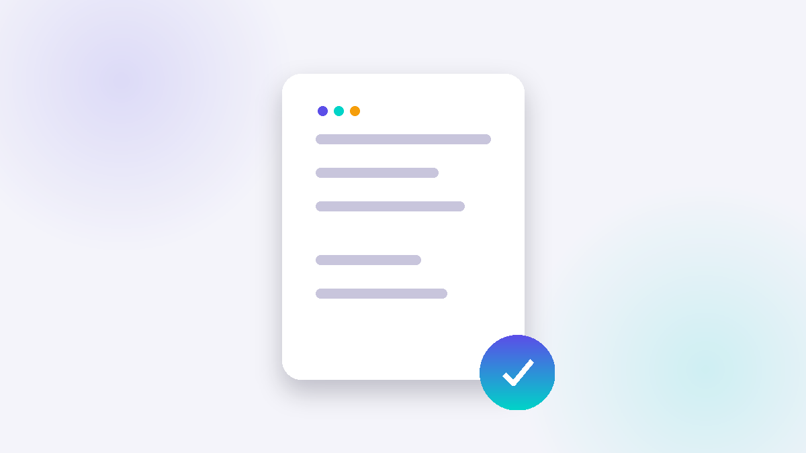

The Anti-Budget: How to Start Tracking Money When Spreadsheets Fail
Published: June 23, 2026 · 7 min read
Most budgeting advice starts with structure, categories, weekly reviews, a plan. For a lot of brains, that's exactly where it falls apart.

Why the spreadsheet method fails so often
Traditional budgeting asks for three things before you've even started, that you sort spending into categories, that you log it the same day, and that you sit down weekly to review the numbers. Each one asks for a different kind of effort, and for ADHD and other executive function differences, any single one of them can quietly become the reason the whole system gets abandoned by week two.
Categorizing means making a decision in the moment, was this “food” or “entertainment”, right when you're least in the mood to stop and think. Logging the same day depends on a working memory that's usually already busy with five other things. And the weekly review asks you to sit with numbers that, for a lot of people, bring up shame faster than insight, so the spreadsheet gets closed and never opened again.
None of this means the person is bad with money. It means the system was built for a kind of attention that not every brain has on demand.
Start with noticing, not tracking
The anti-budget skips the part where you build a whole system, and starts one step earlier, notice. For a week or two, just write down what you spent and one word for how you felt buying it, no categories, no analysis, no judgment.
This isn't a workaround, it's actually one of the most well documented ways to change a behavior. Self-monitoring, simply observing and recording something about yourself, shows up across decades of behavior change research as one of the techniques that reliably works on its own, even before any plan or goal gets attached to it. You're not managing your spending yet, you're collecting honest data about it for the first time.
Why low friction works better for this kind of brain
A lot of financial advice assumes everyone weighs “buy now” against “save for later” the same way. Research on ADHD points to differences in delay discounting, how much a future reward gets mentally discounted compared to an immediate one, which helps explain why a system that only rewards you weeks later, like a monthly budget review, struggles to compete with the immediate pull of a purchase.
If structure fails because it asks for too much too soon, the fix isn't more discipline, it's less upfront cost. Noticing has almost none. There's no category to pick, no app to configure, no plan to stick to, just a line you write down.
How to actually do it
- Pick one place to write things down. Notes app, a sticky note, Finiverse, whatever you'll actually open again.
- Log two things only: the amount, and one word for how you felt. “Coffee, $4, tired.” That's a complete entry.
- Don't categorize yet. Resist the urge to organize while you're still collecting. Categories come later, once there's something real to categorize.
- After about two weeks, read it back in one sitting. Patterns usually show up on their own, certain feelings keep appearing next to certain kinds of purchases, and you didn't have to track anything cleverly to see it.
When you're ready for structure
Once you can see your own patterns, structure stops being a guess and starts being a response to something real. That's the point where categories, spending limits, or a tool like Finiverse's emotion check-ins actually have something to attach to, instead of asking you to predict your own behavior in advance.
The order matters more than the tool. Notice first. Build structure on top of what you actually find, not on what a generic budgeting template assumes about you.
Sources
- Michie, S., Richardson, M., Johnston, M., et al. (2013). The Behaviour Change Technique Taxonomy (v1). Annals of Behavioral Medicine.
- Barkley, R. A. (2012). Executive Functions: What They Are, How They Work, and Why They Evolve. Guilford Press.
- Beauchaine, T. P., Ben-David, I., & Bos, M. (2020). ADHD, delay discounting, and risky financial behaviors. PLOS ONE.
Want a tool that meets you at notice, not at structure?
Finiverse lets you log an amount and a feeling in seconds. Categories and patterns can come later.
Download Finiverse free →